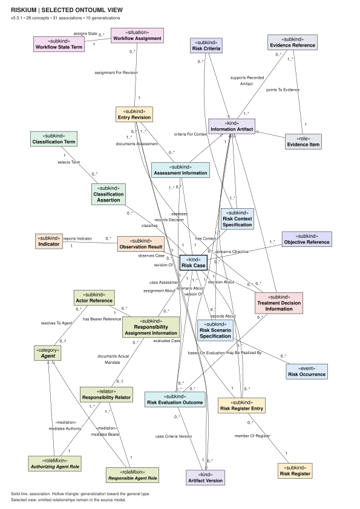

Enterprise risk knowledge, explicitly modeled
Conceptual design 0.3.1 · WIDOCO reference
Riskium distinguishes a managed risk case from register entries, scenario specifications, assessment results and supporting evidence. Use the conceptual guide for meaning, the OWL reference for asserted logical commitments, and evaluation for the scope of executed checks.
The first development prerelease v0.3.1-rc.1 is published. Independent semantic acceptance and a stable scientific release remain open.
Inspect the conceptual source
Browse all 80 catalog concepts, 134 relations and 25 interpretation constraints.
Conceptual referenceRead the OWL commitments
Inspect 78 named classes, including the local anchor, and 127 object properties.
WIDOCO referenceExplore and reproduce
Follow asserted parent and relation links; inspect the exact source and finite evidence.
Explore the typed coreEvidence and limits
HermiT: 693 executed cases PASS; 281/295 baseline obligations, 14 NOT_RUN. SHACL: 341 scoped PASS, 1 PARTIAL and 17 NOT_RUN of 359 obligations.
These populations have different meanings. Their counts do not estimate overall semantic correctness. C-08 remains partial; external alignment and full profile integration remain open.
Selected conceptual view
The selected diagram is a subset. The complete catalog, optional boundaries and local external anchor are distinguished in the reference.

